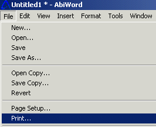
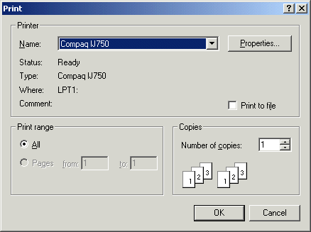

Congratulations you have now completed all the basic functions you need to know to write a letter. And I bet you're ready to print out that wonderful document you typed, so it can be sent in the mail to whom ever you are writing it to, or you may simply want to print it to save a hard copy in a file, or to proofread it. Whatever the case maybe below you will find out to how print your letter.
Select "File" from the menu.

Select"Print" from the list.

You can choose how many pages you would like to print of your letter, or choose what page you would like to print. Either way make your selection in this box
Select "OK".
If you like how your document printed and are done using this program. You can close your document. But first remember to save your document again if you would like to keep a copy of it on your computer.